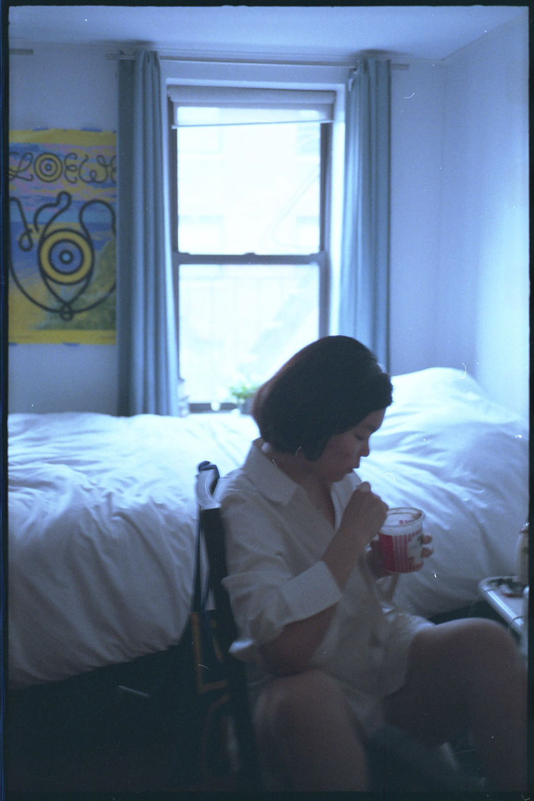
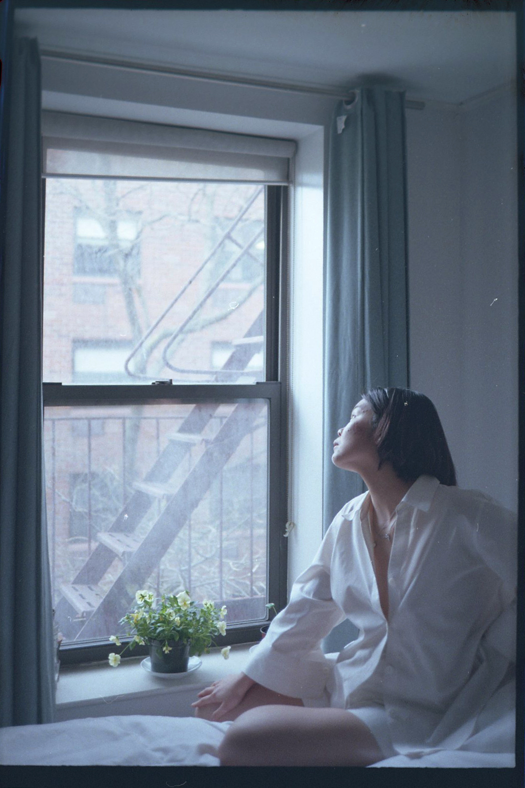
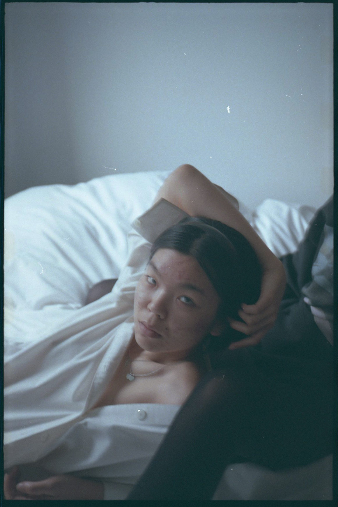
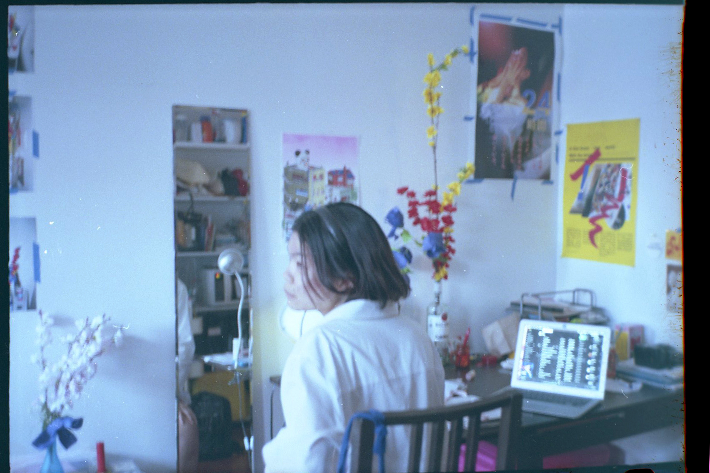
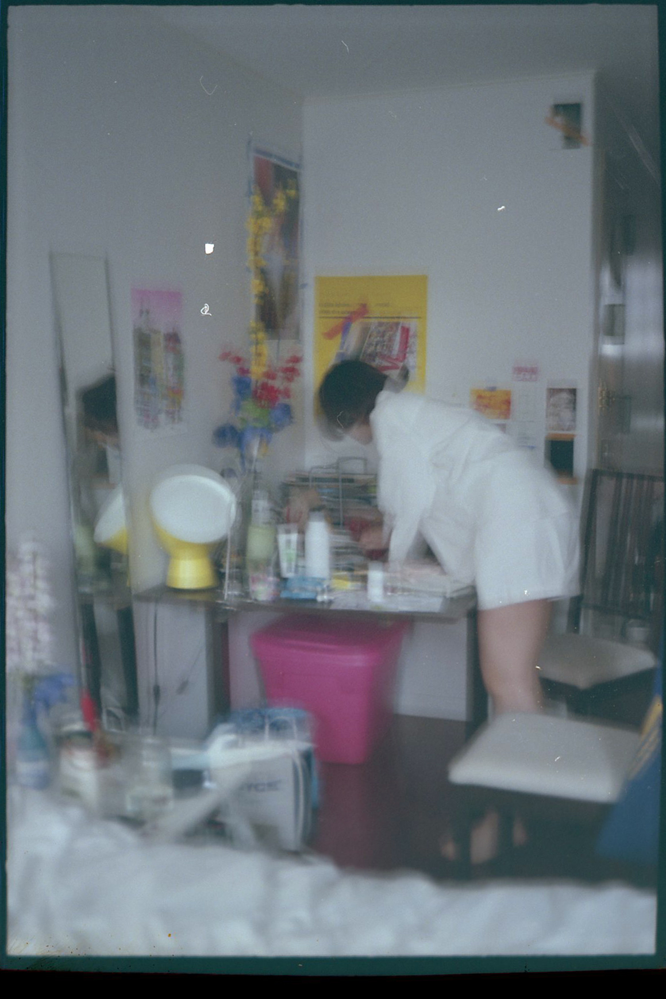

Tiffany Tong
tiffany is a sophomore at parsons, currently exploring different paths and forms of making through communication design.

Nolita, Manhattan, NY
04.21.19 8:15 pm
Tell me about your background. What is your heritage and where did you grow up?
I was born in LA, I lived there until I was eight, and I moved to Hong Kong and lived there until I was 18. So I had a super Asian upbringing, but I still heavily remembered my Western upbringing. I mainly identify myself as Chinese instead of Chinese American, only because I don't think I've truly lived in America long enough to understand the Chinese American life. I technically am one, but I don't think culturally, the way I grew up, I really am one.
I think you would definitely have a diverse and more international perspective on these subjects then. How has that experience influenced your sense of cultural identity?
I used to be super pro-Asian. My mom asked me once about my ideal type, and I said, 'Probably Asian or half-Asian, not white,' and my mom was shocked, because she remarried to a white, British male. So there's that. She thought I'd go for a white guy; especially growing up in a British international school, I was surrounded by that. I also grew up with my step-dad kind of messy and inconsiderate about my culture.
Do you want to speak on those experiences a bit?
I just remember Chinese New Year, it's a big thing for my mom, she's very spiritual and cares about preserving Chinese culture, and my step-dad would think spending time with the family was pointless. So it really made an impression on me whenever I saw my mom bothered by the fact that my step-dad didn't really care about Chinese New Year, or the usual dumb ignorant shit about food, I guess just culture in general. Also my mom gave birth to my baby brother- he's like 6 now, he's a half- and it's not explicit, but I feel like they argue about how to raise him.
I guess because I spent my formative years in Hong Kong with a huge Asian family, I sided with my mom and it made it really hard for me to like the idea of wanting to be with a white man or a white person as my partner, because I feel like fundamentally they would not be able to understand me.
Do you think the cultural differences are too extreme?
At the age that my mom was marrying my step-dad, I was 13, I couldn't understand why they were marrying each other, it literally just boggled my mind. Then I spent more time with my step dad, eventually just learned to live with it, but it was hard for me to wrap my head around, I guess over the fact that he was white and grew up in a Western setting and is in a very privileged place. He's way cooler now than I thought he was, but back then that was a memorable feeling that I had towards my mom and my step-dad's relationship and why I decided not to go for white guys for a while.

"Yesterday at this party, one of the boss' friends, he has grey hair, came up to me and he was like, 'Oh, are you Vietnamese?' Like really, you're going to try a pick up line and the pick up line is you addressing my race that's not even my race? Why even bring race into your pick up line?"

Growing up in a white international school and having a white step-dad, that didn't make you more attracted to white guys?
I could objectively see them as handsome or good looking, I'd flirt with them, but I could never see myself being serious about them. The school environment I was in, their idea of beauty is super westernized. I was never an object of interest, because I was Asian, because all the white kids would date solely each other. But also, my body type is not considered attractive in Asia. I had a really chubby figure; my nickname growing up and still is, in Cantonese, it's Fei Lun. The translation is like fat creature, not in a mean way, like a mythical creature, but still. Now, it doesn't get to me, but growing up my family really picked on me for my size. So I guess it didn't make me feel like I was appealing until I lost some weight and kissed some boys.
Growing up did you see many other white male-Asian female relationships outside of your mom and step-dad?
I did a lot, I would travel to Thailand, which that shit is heavy there. It's fine if you're discreet about it- sex workers go you, do your thing- but it's kind of disgusting the way you see them do it. There's all these fat Russian men there, in their flip flops with beer, just being so grabby. I would have buffet lunch and there would be tables with a group of old white men and then a few young Thai women sitting there, you could hear them talking about sexual innuendos and it's just so greasy.
Why do you think that dynamic exists in Thailand, or other Southeast Asian countries?
There's a market, because fetishization. I feel like it's so normalized there, they've been doing it for a while so it's hard to crack down. There are a lot of other problems in third world countries that people are funneling money into, that they can't funnel into the well-being of society and people's jobs and being represented well. These countries that rely on tourism, their economy is super unstable and they're in an oppressive place, if you're not rich.
And I mean, white people have basically always imperialized Asia; I feel like that dynamic is left over from colonialism. How do you think having so much white male power there affects the woman there?
That's super valid. All the people there, the workers, can speak Russian. It's just a slow, legal way of colonizing Asia again for people with money, and they submit to it, because they don't have a choice. I feel like that is just demoralizing, for not even just the women, but the community. As for the women, they will start to normalize it and that's a really scary thing, because the more you normalize things, the more it's hard for you to go back.

"I feel like in Asian upbringing, they teach women to be considerate and docile and kind. But we adopt those principles sometimes to an extreme and we allow ourselves to be oppressed by these people, giving and giving and giving and letting them just take."
Going back to you, as an Asian woman navigating the city, what was your experience moving here and what differences did you see?
Definitely catcalling. I barely experienced that in Hong Kong, I would get the occasional men staring, but in New York, I was really shocked that they would say things or come up to you in the middle of the street. It was a culture shock for me and it made me a little paranoid. I hate to say it, but I would just have these ideas that construction workers are all nasty and preying on young women, and men who are in bars alone who are older will come up to you. It sucks that I have to project that onto those people and that I have to carry that worrisome feeling.
How do these fetishizing perceptions make you feel?
I can't believe just because I don't look like you, I'm all of this, apparently. I feel so nasty. Just the way they find it so interesting when you're not that typecast. Or when you're acting like yourself, but you by chance play into those ideas, they are very humored by it. Just the thought that it gets them going and it entertains them. I don't want this to be like I'm a thing for you. You fetishizing me has nothing to do with me and you.
It really shows that they're only seeing your race, not actually you. And for some reason, you must be Vietnamese. On that note, what does the term yellow fever mean to you?
I feel like because I haven't grown up in America, I haven't experienced what you or Claire or Juriel would have gone through for me to formulate my belief entirely. I understand it's a really terrible thing. Any kind of objectification of people, I always imagine when they're objectifying someone, they look at them like they're a piece of meat, like a cow. Someone who has an active body and mind of its own, and has a brain and a heart, but has nothing to do with them. I think they feel removed in that way and that's how they're able to objectify someone. They view them with so little respect, they still understand that there's some bit of them tied together, but it doesn't matter. I feel like it's a really harsh view of it, but when it boils down to it, you don't see me like I'm just like you. You see me as someone that's lesser than you.
Do you date mostly white or Asian men, and why do you think that is?
Mostly Asian guys. Initially I find it more comfortable in that they could relate to me on a lot of the values that I carry. I guess because I hold those values so closely to me, them understanding it is actually a really big thing for me. I think it's a safer bet. I feel like I can't relate to a white person unfortunately, and I wish I didn't have to say that. But I don't think they could fully understand me and I can't fully understand them. I know it's not a great mindset to have, but I'm still warming up to white boys.
But it is true that most people date within their race; there's more common ground, you just have more to identify with.
It's also the added fact that culture allows it so that people of other races don't like each other or project ideas of each other and that makes it harder for us to communicate just as people. Society just really ingrained balls deep some bullshit that we're all just so different from each other.

How did that experience with your ex make you feel?
I feel like growing up I had a really backwards idea of my place in a household as a woman; I'm still learning feminism. I never really truly understood the importance of female solidarity until I came here. So when I was dating him I still had a lot of those ideas and he helped reinforce them unfortunately. I still have these superior feelings, not against my race, but I'm still figuring out if this is who I truly am, or if it's just because my ex put me in this glorified little picture and I'm still carrying parts of that around.
I interviewed my friend's boyfriend (1.) and he expressed how he doesn't have a lot of opportunity to date outside of his race, because of the stereotypes placed on Asian men. So maybe your ex glorified you for being different from other Asian girls, because he's limited to that variety.
Yeah, that's unfortunate. And you have to be an- I hate this termalpha Asian male type to even think about going for someone outside of your race. You know, in California especially, those ABC rave boys.
Do you ever consider ideas about yellow fever subconsciously or consciously in relationships?
I feel it subconsciously. And sometimes consciously and I think it has a lot to do with my ex. The way he portrayed me as a limited edition Asian girl and that was my brand, that was something that really made him attracted to me. He was my first, so I was really impressionable, and I held that close to me as my unique selling point. And that's definitely unhealthy, because that perpetuates toxic femininity- thinking that makes you more superior or more interesting than other women, when we're all exactly the same.
Do you think his persona or views might be in response to the stereotypes that are put on Asian men?
Oh yeah, I think he seeks to come out as very masculine and aggressive and dominant and strong, which can be good qualities and I wish I could be all those things too. But he's so repressed to the point where he couldn't differentiate treating a person as a person, than as a tool for them to feel better about themselves and their power. I feel like that's due to the emasculation of Asian men. Also with hypersexualization, Asian women falling into that Asian femme fatale idea.
What is the femme fatale idea?
The exotic, super sexy, edgy, playing coy but really not- it's just a fantasy that they prescribe to themselves, because they either don't want to be like the other Asian stereotype, which is just coy all around and super submissive, or they think it's empowering for them. Which is fine if that's what you want, but you have to not empower it as a guise, but truly as who you think you are.
What do you think needs to change to move in the right direction?
I think just a lot of cultural education. History is really important, but I think another effective way is letting people be intrigued in other people's cultures. At Parsons, especially in the Com Design major, the whites and the Asian kids in my class live in different worlds. I think people should be comfortable about understanding both cultures and actually be interested in it, because I feel like culture is something we can't run away from, and something we can easily gravitate towards to make people come together.
Do you think white men are responsible for changing these perspectives or who is responsible?
I mean, they're responsible for us having these terrible perspectives. I definitely think they need to be held most accountable for their actions and try their best to understand what they may or may not have done, but we all have a little reflecting to do. I feel like a lot of people- I'm only saying this out of knowing myself, I have a lot of deep seated ideas about relationships and race that were projected onto me growing up that I need to fully unpack. But I feel like white males out of all of us need to start, like, now.